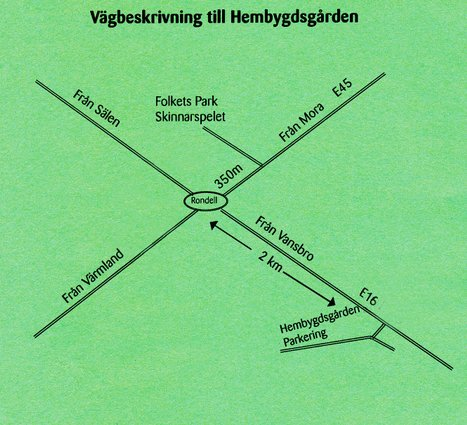

Kontakt
Kontaktinformation
Bli medlem
Välkommen att bli medlem i Malungs Hembygdsförening. Som medlem i hembygdsföreningen får du medlemsskriften Öfre Gäldet varje år, samt 10 % rabatt på årsboken Skinnarebygd.
Medlemsavgifter 2018
- Enskild medlem: 150 kronor
- Familjemedlem: 100 kronor
- Ungdom under 25 år 50 kronor
- Företag: 200 kronor
Sätt in avgiften på vårt pg 39 59 01-2 eller vårt bg 997-1474. Det går också lika bra att kontakta någon i styrelsen.
Kontaktpersoner och Funktionärer
Guidning Efter överenskommelse, tel. 0280-105 57
- Byggnadsvård: Leif Thoors, Jan-Anders Lindstrand, Bengt Thomasson
- Skinnarebygd: John-Christer Åhlander, Hampus Kurt Jonsson, Göran Bergman
- Öfre Gäldet: Britt Siv Nilsson, Jan Kapla
- Vaktmästare: Jan-Anders Lindstrand
- Textilier: AnneMarie Helmersson och Mass Elisabet Larsson
- Valberedning: Gun-Britt Ek
Hitta hit
Vägen till Malungs Hembygdsgård på Hundholen är lätt att hitta eftersom gammelgården ligger alldeles intill E16. Om du kommer från Sunne eller Mora (E45) sväng mot Vansbro i rondellen, åk 600 m. Följ skyltarna. Om du kommer från Borlänge (E16), efter järnvägsviadukten 300 m sväng vänster. Följ skyltarna. Om du kommer norrifrån (Sälen E16) kör rakt fram i rondellen mot Vansbro. Åk 600 m. Följ skyltarna.
Man kan också navigera hit med hjälp av Google Maps: